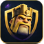
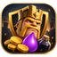

OR RÉCOLTÉ—

Pilote de raid
Automatisez vos raids, maximisez vos ressources
Synchronisation…Connexion…
ÉLIXIR RÉCOLTÉ—
ÉLIXIR NOIR RÉCOLTÉ—
Réglages
Fenêtre et critères du prochain raid
Le bot vérifie les unités visibles dans la barre de combat avant chaque pose.
Le bot garde un ouvrier libre pour les bâtiments et 1 M de chaque ressource pour les remparts.
Suivi en direct
Journal, capture et actions ponctuelles
Événements du cycle
Aucun événement pour cette session.
Aucune capture
Cliquez sur « Lire l’écran » pour afficher le jeu.
Statistiques enregistrées
Cumuls confirmés après les combats
Combats comptabilisés—
Or par combat—
Élixir par combat—
Élixir noir par combat—
Un résultat de combat est en attente de lecture.
Les moyennes sont calculées à partir des cumuls sauvegardés. Aucun historique de combats détaillé n’est enregistré.
Compte actif
Dernier relevé du profil Clash ouvert dans le jeu
Aucun profil relevé
Ouvrez Clash of Clans, puis lancez le relevé du compte actif.

—
Relevé leNiveau—
Or—
Élixir—
Élixir noir—
Gemmes—
Ouvriers—
Laboratoire—
Outils du bot
Lecture, calibrage et diagnostic
Positions personnalisées enregistrées : —
Configuration active
Les valeurs enregistrées pour les prochains cycles
Butin
—
Armée
—
Cycle
—
APPLICATIONCoC Farm Bot —Le bot utilise les données conservées sur cette machine.